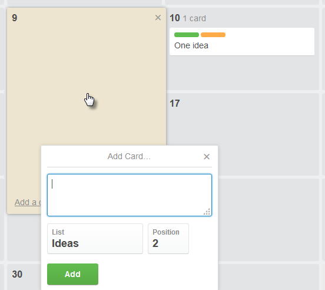

Only board administrators can enable Power-Up features.
Warning: Moving cards on the calendar results in changing their due date.
To activate the calendar feature, go to Show Menu > Menu > Power-Ups and click Enable next to the Calendar feature.
The Calendar button appears on the board menu bar and you can see it in weekly or
monthly view.
If there are cards with due dates assigned on the board, you can open and edit the cards directly by clicking on
them in the calendar.
To see the icons on cards on the calendar, as you see them on the board, click somewhere in the day space
(outside the cards).
You can add new cards for a certain date by clicking the day in the calendar.

Type the card title, select a list from the board and the position in the list, then click
Add.
The due date on the new card is automatically set to the day you clicked in the calendar, and the time is
by default 12:00 PM. You can click the card and edit the due date and other details.
Click Calendar again, to return to the board view.